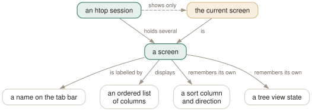

Day 11
Screens as tabs
One column set per question, instead of one compromise for all of them.
By the end of today you can
- move between screens and know which one you are on without looking at the columns
- build a purpose-made screen for a question you actually have
- write a screen directly into htoprc, per-screen sort and all
You have had two tabs all along
Press Tab. htop ships with two screens — Main and I/O — and most people never find the second one, because until you turn on the tab bar there is nothing on screen to suggest it exists.
A screen is a named, complete configuration of the process list: its own columns, its own sort column and direction, its own tree state. Tab and Shift-Tab cycle. This is htop 3's most useful feature and the manual page does not describe it.
Avg[|| 0.9%] Tasks: 237, 2883 thr, 418 kthr
Mem[|||||||||||||||||||||||||||| 11.9G/61.9G] Load average: 0.26 0.20 0.19
[Main] [Memory] [I/O] [Containers]
PID USER NI RES PRIV PSS S CPU%▽MEM% TIME+ Command
76008 jhrcek 0 356M 240M 310M S 7.5 0.6 0:03.75 code --type=renderer
5399 jhrcek 0 346M 164M 206M S 2.5 0.5 2:13.39 gnome-shell

The config format
A screen is one screen: line followed by its .-prefixed settings. The dotted lines belong to the screen: line immediately above them, so order matters here in a way it does not elsewhere in the file.
screen:Memory=PID USER M_RESIDENT M_SHARE M_PRIV M_PSS M_SWAP PERCENT_MEM Command
.sort_key=M_PSS
.sort_direction=-1
.tree_view=0
screen:Name=- The tab's name, then its columns in order. Use the internal names from
htop --sort-key help, not the display headings. .sort_key- A column name — and it does not have to be one of the columns on screen.
.sort_direction-1descending,1ascending..tree_view,.tree_sort_key,.all_branches_collapsed- The tree state, remembered per screen.
Screens worth having
Four that earn their tab, beyond the default two:
Memory- Day 3's columns side by side —
RES,SHR,PRIV,PSS,SWAP— sorted byM_PSS. Today's config block. The point is not that PSS is on screen but that it is next to RES, so the gap between them is visible. ContainersCONTAINERandCCGROUPwith CPU and memory. Day 13 builds it.ThreadsNLWP,TGID,PROCESSORandCTXT. For the specific failure where one thread in a pool is pinned and the process average looks fine.LifetimeSTARTTIME,ELAPSED,PPIDandOOM, in tree view. Answers “what restarted, and what started it” — which is most of what an incident turns out to be.
Today's habit
Turn on screen_tabs if you have not already, so that the screens you build are discoverable six months from now. A tab you cannot see is a tab you will not use.
Then build exactly one screen — the one matching the thing you are actually on call for. Four speculative screens you never press Tab to reach are worse than none, because they make the tab bar noise.
Tomorrow: the I/O screen you have had all along, and the delay-accounting columns that explain why a process is slow when nothing is busy.
New vocabulary
Keys
| Key | Does |
|---|---|
| Tab | Move to the next screen. Shift-Tab goes back. |
Options
| Option | Does |
|---|---|
screen:NAME | Define a screen and its columns, in order, space-separated. |
.sort_key | The sort column for the screen defined immediately above. |
.sort_direction | -1 for descending, 1 for ascending. |
.tree_view | Whether this screen starts in tree view. Per-screen, like everything dotted. |
Today's configappend to ~/.config/htop/htoprc
A screen for 'what is eating the memory on this box'. PSS is the sort key because it is the only column from Day 3 that can be added up, and having RES, SHR, PRIV and PSS side by side is what makes the double-counting visible rather than theoretical. No CPU columns at all -- this screen answers one question.
screen:Memory=PID USER M_RESIDENT M_SHARE M_PRIV M_PSS M_SWAP PERCENT_MEM Command
.sort_key=M_PSS
.sort_direction=-1
htop reads this file once, at startup, and there is no reload key: quit and start it again. Note that htop rewrites the file — comments and all — on a clean exit from any session in which you changed a setting.
Drillsdo these in a real terminal, today
Self-check
Answer out loud first, then unfold.
You add a screen:Memory= line to your htoprc, restart htop, and no new tab appears. The syntax is right. What are the two likely causes?
First, screen_tabs may be off, in which case the screen exists and Tab reaches it, but nothing is drawn to tell you so. That is Day 9's config line, and it is the reason most people never discover the I/O screen they have always had.
Second — and this is the one that wastes the afternoon — a fields= line elsewhere in the file. It overrides the column list for Main and, being a leftover from an older config format, tends to indicate a file htop has rewritten since you last edited it. Delete it.
What exactly does a screen remember, beyond its columns?
Its sort column and direction, its tree view state, its tree sort column and direction, whether all branches start collapsed, and its tree stability mode — each written as a .-prefixed line immediately after the screen: line it belongs to.
That is more than it sounds. It means a Processes screen can permanently be a PID-sorted tree while your Memory screen is permanently a flat list sorted by PSS, and switching between them with Tab switches the entire way you are looking at the machine — not just which columns are on show.
Why is a screen a better answer than just adding the columns you want to Main?
Because width is finite and questions are not. A Main screen that carries the memory columns, the I/O columns and the cgroup columns has no room left for Command, and a column set that answers every question answers none of them quickly.
Screens let each one be uncompromised: eight memory columns on the memory screen and none on the others. The cost is one keystroke to switch, which is cheaper than horizontal scrolling and much cheaper than reading the wrong column because two similar ones are adjacent.
Screens are htop 3's headline feature. Why does the manual page barely mention them?
It mentions Tab under INTERACTIVE COMMANDS and then discusses screens mostly in the context of pcp-htop, where extra screens can be added from configuration files. The ordinary htop case — build a tab in Setup, get a screen: line in your config — is not documented anywhere.
This is the same pattern as the whole Setup screen, and it is worth generalising rather than resenting: a manual page tends to document the command-line and file interfaces well and the interactive interface poorly, because the first two are what scripts depend on. For anything you reach by pressing a key, the built-in help and the config file the program writes are the real documentation.
Cheat sheet
Tab Shift-Tab next / previous screen
screen_tabs=1 draw the tab bar (Day 9) -- without it, screens are invisible
screen:Memory=PID USER M_RESIDENT M_SHARE M_PRIV M_PSS M_SWAP PERCENT_MEM Command
.sort_key=M_PSS # may be a column that is NOT on screen
.sort_direction=-1 # -1 descending, 1 ascending
.tree_view=0 # tree state is per-screen too
the dotted lines bind to the screen: line ABOVE them -- order matters here
use internal names (M_RESIDENT), not display headings (RES)
Command last, always; an unknown column name is dropped in silence
Each screen remembers its own columns, sort column, sort direction and tree state, so Tab changes the whole way you are looking at the machine rather than just which columns are visible.
Everything through Day 11
Keys
| Key | Does |
|---|---|
| Ctrl-L | Redraw the screen and recalculate, without waiting for the next tick. |
| Z | Pause and resume sampling. The screen freezes; the machine does not. |
| F10q | Quit. This is also the only exit that saves your settings. |
| UpDown | Move the selection one row. Alt-k and Alt-j do the same. |
| PgUpPgDn | Move the selection a screenful at a time. |
| HomeEnd | Jump to the first or the last process in the list. |
| LeftRight | Scroll the whole list sideways. Also Alt-h and Alt-l. |
| Ctrl-A^ | Scroll back to the start of the selected process's line. |
| Ctrl-E$ | Scroll to the end of the selected process's line. |
| Alt-UpAlt-Down | Pan the view without moving the selection. Shift-Up/Shift-Down too, if your terminal lets them through. |
| p | Toggle full program paths in Command. |
| m | Toggle merging exe, comm and cmdline into Command. |
| F3/ | Incremental search: move the selection to the next match. Does not hide anything. |
| F3 | While searching: jump to the next match. Shift-F3 goes backwards. |
| F4\ | Incremental filter: hide every row that does not match. |
| Enter | In the filter prompt: keep the filter and put the prompt away. |
| Esc | In the filter prompt: clear the filter. In search: cancel it. |
| u | Open the user menu and show only one user's processes. |
| Digits | Type a PID and the selection jumps to it. Silently — there is no prompt. |
| F6><. | Open the “Sort by” menu. All three punctuation aliases work. |
| I | Invert the sort direction. The arrow in the heading flips. |
| NPMT | Sort by PID, CPU%, MEM% and TIME. The top(1) compatibility keys. |
| F5t | Toggle tree view. The F5 label changes to List while you are in it. |
| +- | Expand or collapse the selected subtree. |
| * | Expand or collapse every subtree at once. |
| F | Follow: pin the selection to this process wherever it moves. |
| Space | Tag or untag the selected process. Tagged rows stay tagged until you clear them. |
| c | Tag the selected process and all of its children. |
| U | Untag everything. The most important key on this page. |
| F9k | Open the signal menu. Defaults to 15 SIGTERM. |
| F7] | Raise priority — lower the nice value. Root only. |
| F8[ | Lower priority — raise the nice value. Anyone can do this to their own. |
| } | Raise the autogroup priority. Shift-F7. Root only. |
| { | Lower the autogroup priority. Shift-F8. |
| a | Set CPU affinity: tick the CPUs this process may run on. |
| i | Set the I/O scheduling class and priority. Not in the manual page. |
| Y | Set the scheduling policy. Not in the manual page either. |
| l | List open files, by running lsof against the selected process. |
| s | Trace system calls, by running strace against it. |
| e | Show the process's environment. Not in the manual page. |
| w | Show the command line wrapped across the whole screen. |
| x | Show the process's active file locks. |
| b | Show a backtrace. Only if htop was compiled with it, which it usually was not. |
| F5 | Refresh the open screen. F3 and F4 search and filter it. |
| F8 | In the strace screen: toggle auto-scroll. F9 stops the trace. |
| # | Hide and show the header meters entirely. Not in the manual page. |
| F2SC | Open Setup, where meters are chosen. C is an undocumented alias. |
| F2SC | Open Setup. C is an alias the manual page does not mention. |
| F10 | Leave Setup. Labelled Done. |
| Space | In Setup: toggle the highlighted option, or add the highlighted meter. |
| K | Hide or show kernel threads. Hidden by default. |
| H | Hide or show userland threads. Shown by default — this is why your list is so long. |
| Tab | Move to the next screen. Shift-Tab goes back. |
Commands
| Command | Does |
|---|---|
htop | Start htop, reading ~/.config/htop/htoprc once at startup. |
htop -d 10 | Sample every 10 tenths of a second. Clamped to the range 1–100. |
htop -n 5 | Draw five frames, then exit on its own. Absent from the manual page. |
htop -V | Print the version. The -v in the SYNOPSIS does not exist. |
htop -F chrome | Start with the filter already applied. Multiple terms: -F 'nginx|php'. |
htop -p 1,843 | Show only these PIDs, and nothing else ever appears. |
htop -u | Show only your own processes. |
htop -u postgres | Show one user's processes. A numeric UID works too. |
htop -s PERCENT_MEM | Start sorted by a column. Forces list view. |
htop -s PERCENT_MEM -t | Sorted and in tree view — the one way to have both. |
htop --sort-key help | Print every sortable column name and what it means. |
htop -t=soft | Tree view with a stable cursor line. classic, soft and hard, or 0/1/2. |
htop --readonly | Disable every process- and system-changing feature for this session. |
htop --no-meters | Start with the header hidden. Gives the process list the whole terminal. |
htop -C | Monochrome. The bar segments become bold, normal and dim instead of colours. |
htop -U | ASCII instead of unicode for the graph meters. |
HTOPRC=~/x htop | Read (and write) a different config file. One config per machine, one shared home directory. |
chmod 444 ~/.config/htop/htoprc | Make the file read-only. htop then runs normally and stops clobbering it. |
htop --sort-key help | The authoritative column list, straight from the binary. Better than the manual page. |
Options
| Option | Does |
|---|---|
delay | Tenths of a second between samples in htoprc. Default 15, i.e. 1.5 s. |
M_VIRT | Address space the process has mapped. VIRT. Mostly promises, not memory. |
M_RESIDENT | Pages actually in RAM, shared ones counted in full. RES. |
M_SHARE | The part of RES that other processes also map. SHR. |
M_PRIV | Resident minus shared — what dies with the process. PRIV, a default column. |
M_SWAP | Pages of this process pushed out to swap. SWAP. |
M_PSS | Resident, but each shared page divided by its number of sharers. PSS. |
M_PSSWP | The same proportional treatment for swapped-out pages. PSSWP. |
M_EPSS | PSS plus PSSWP: the whole footprint, proportionally. EPSS. |
PERCENT_MEM | RES as a share of total RAM. MEM% — and it inherits RES's double counting. |
detailed_cpu_time | Split the CPU bar into irq, soft-irq, steal, guest and io-wait. Default off. |
header_layout | One to four columns, in fourteen width presets. Default two_50_50. |
column_meters_0 | The meters in the first header column, space-separated. |
column_meter_modes_0 | Their display modes: 1 bar, 2 text, 3 graph, 4 LED. |
highlight_changes | Highlight processes that are new or whose command line changed. Default off. |
highlight_changes_delay_secs | How long that highlight lasts. Default 5. |
enable_mouse | Let htop capture mouse events. Default on, which costs you terminal text selection. |
header_margin | Leave a blank line around the header. Default on. |
screen_tabs | Show the names of screen tabs above the list. Default on. |
fields | The legacy numeric column list. Silently overrides every screen: line. |
NLWP | How many threads this process has. The cheapest way to spot a thread pool. |
TGID | Thread group id — a thread's process. Equals PID for a process. |
STARTTIME | Wall-clock time the process started. Shown as START. |
ELAPSED | How long it has been running. Undocumented in the manual page. |
OOM | The OOM killer's score for this process. Who dies first under memory pressure. |
CTXT | Context switches counted over the refresh interval. A rate, not a lifetime total. |
PROCESSOR | Which CPU it last ran on. Shown as CPU. |
SCHEDULERPOLICY | The scheduling policy from Day 6's Y dialog. Undocumented in the manual page. |
SECATTR | The SELinux or AppArmor label. Undocumented, and very wide. |
show_thread_names | Show each thread's own name rather than its process's command. Default off. |
highlight_threads | Draw thread rows in a different colour. Default on. |
screen:NAME | Define a screen and its columns, in order, space-separated. |
.sort_key | The sort column for the screen defined immediately above. |
.sort_direction | -1 for descending, 1 for ascending. |
.tree_view | Whether this screen starts in tree view. Per-screen, like everything dotted. |